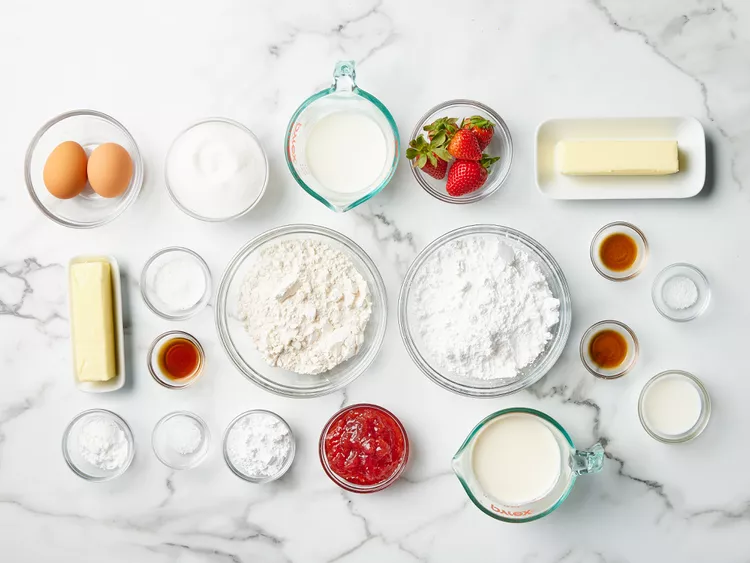
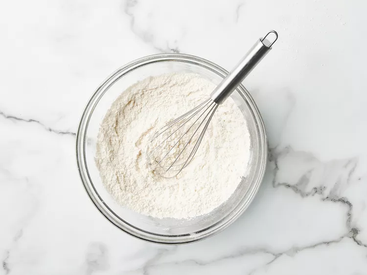
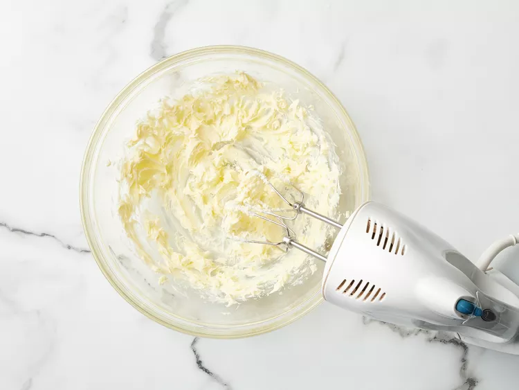
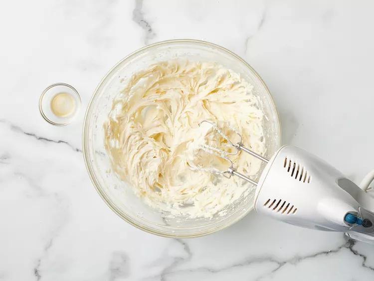
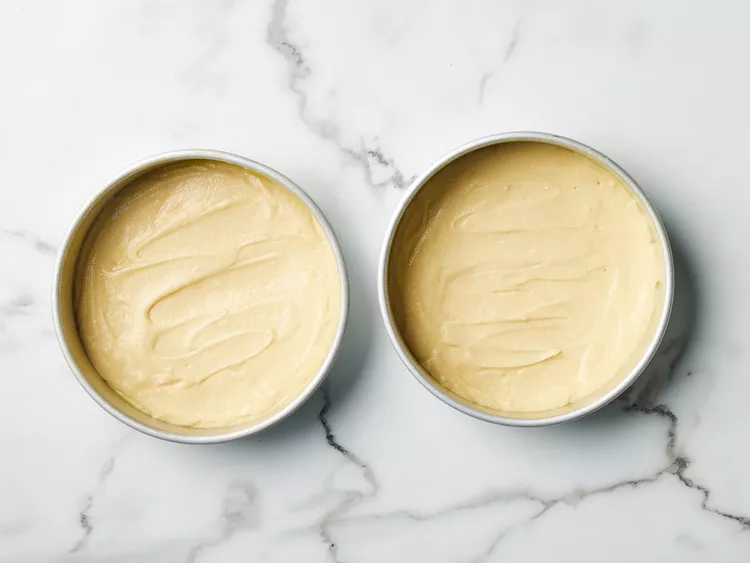
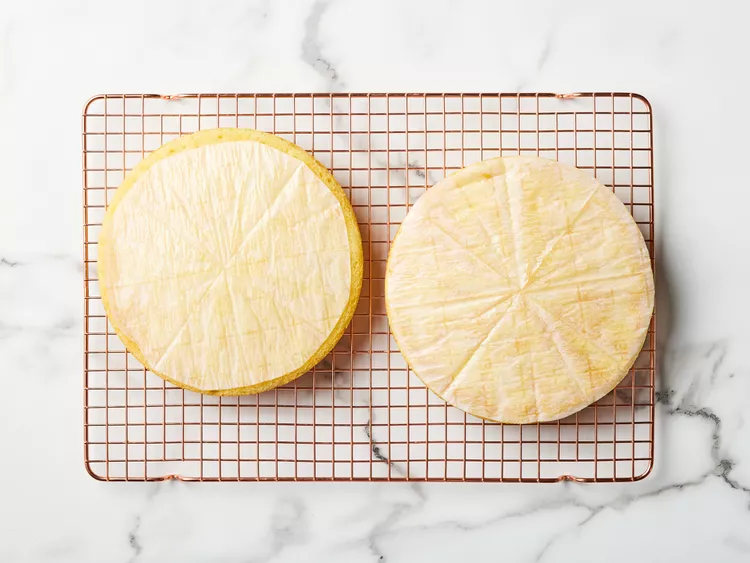
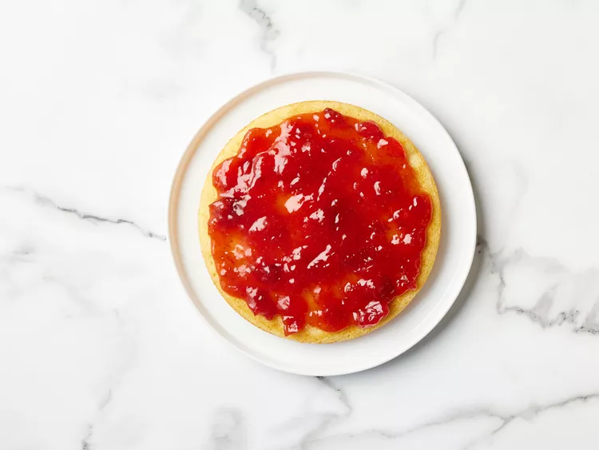
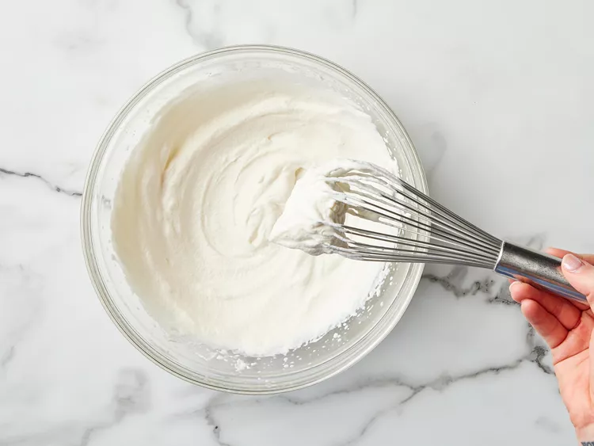
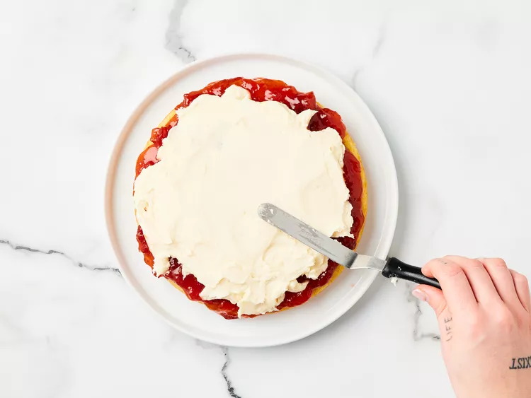
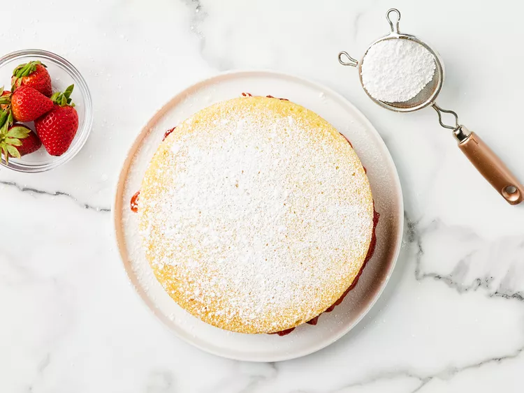

Odin Recipes
Victoria Sponge Cake

Description
Victoria sponge cake is a classic British dessert known for its light and fluffy texture. It consists of two layers of airy sponge cake,
traditionally made with butter, sugar, eggs, and self-rising flour. The layers are sandwiched together with sweet strawberry or raspberry
jam and a layer of whipped cream or buttercream. Often dusted with powdered sugar on top, this simple yet elegant cake is a staple for
afternoon tea and special occasions. Its balanced sweetness and soft texture make it a timeless favorite.
Ingredients
- baking spray
- 1 ½ cups all-purpose flour (such as Gold Medal)
- 1 ½ teaspoons baking powder
- 1 tablespoon cornstarch
- ¾ teaspoon kosher salt
- 1 cup granulated sugar
- ½ cup unsalted butter or margarine, softened
- 2 large eggs, room temperature
- 2 teaspoon vanilla extract
- ½ cup whole milk, room temperature
- ½ cup strawberry or raspberry preserves
Vanilla Whipped Cream
- ¾ cup heavy whipping cream/li>
- 2 tablespoons powdered sugar, plus more for dusting
- 1 teaspoon vanilla extract
- fresh strawberries, for garnish (Optional)
How to Make
-
Gather all ingredients. Preheat the oven to 325 degrees F (160 degrees C). Grease two 8-inch round cake pans with baking spray;
line bottoms with parchment paper. Lightly spray parchment paper with baking spray.

-
Sift flour, cornstarch, and baking powder into a medium bowl; whisk in salt and set aside.

-
Beat sugar and butter with an electric mixer on medium speed until light and fluffy, about 3 to 4 minutes, stopping to scrape down sides as needed. (The mixture should be noticeably lighter in color.)

-
Beat in eggs, one at a time, on medium speed, allowing each egg to blend into butter mixture before adding the next, 1 to 2 minutes total. Beat in 2 teaspoons vanilla. With mixer on medium-low speed, add flour mixture in 3 batches, alternating with milk, beating until just combined after each addition.

-
Evenly divide batter between prepared pans and spread into an even layer using a small offset spatula. Firmly tap pans on a kitchen towel-lined counter several times to help get rid of any large bubbles in the batter.

-
Bake in the preheated oven until a toothpick inserted in the center comes out clean, about 18 to 22 minutes. Cool cakes in the pans for 10 minutes, then turn the cakes out onto a wire rack. Let stand, parchment side down, on wire racks until cooled completely, about 1 hour.

-
Remove and discard parchment paper. Place 1 cake layer on a serving plate. Stir preserves in a small bowl until mostly smooth; spread in an even layer over cake.

-
To make vanilla whipped cream: Whisk heavy whipping cream, powdered sugar, and 1 teaspoon vanilla extract by hand in a large bowl until stiff peaks form, about 2 minutes.

-
Dollop over jam, then spread into an even layer.

-
Top with remaining cake layer. Dust with powdered sugar and garnish with strawberries (if using).
